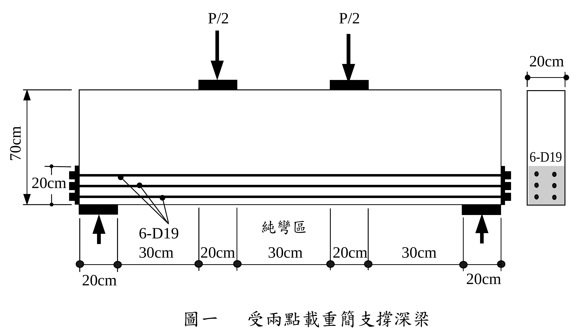
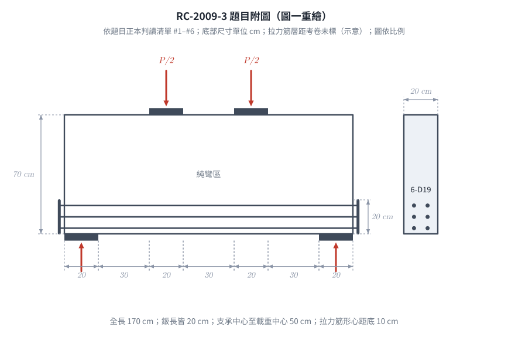
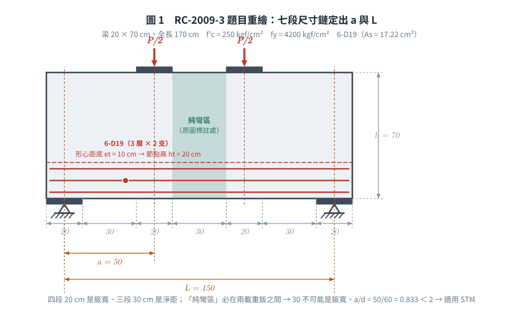
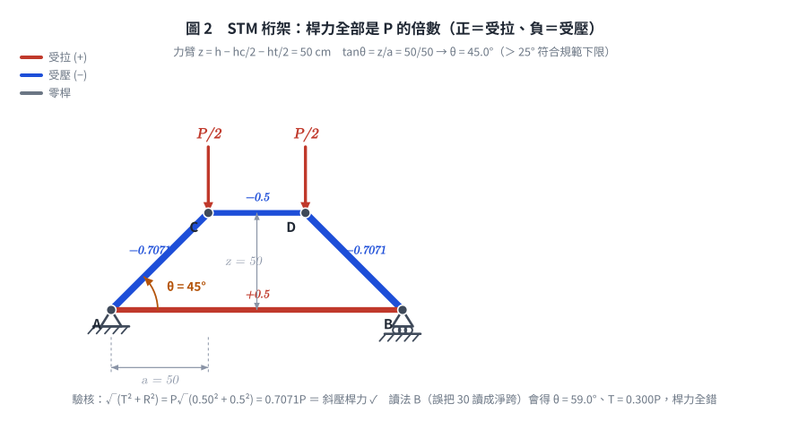
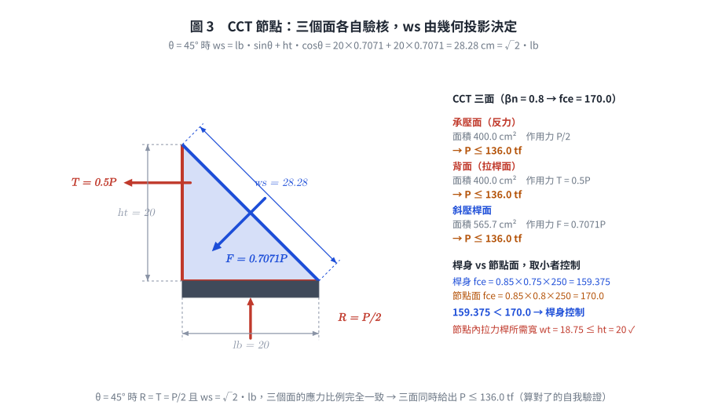
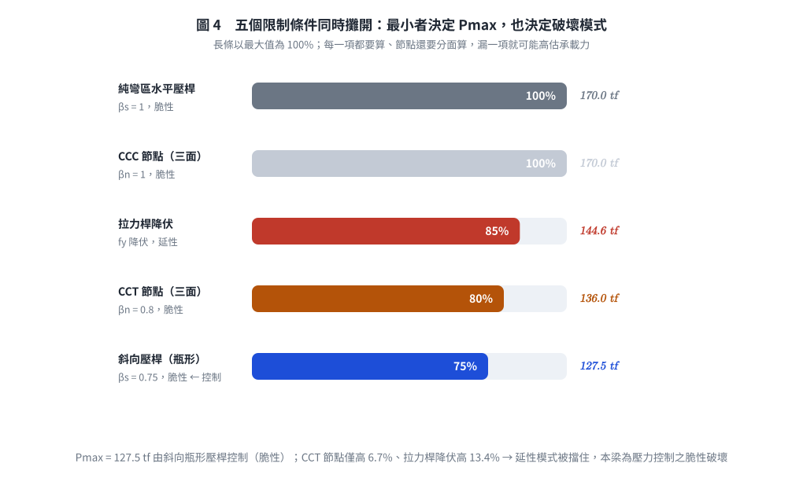

📄 題目正本：考卷原文・附圖・判讀清單（已確認）
RC-2009-3 題目正本
本檔只記錄考卷上寫了什麼、圖上畫了什麼，不含任何解法。解析見同資料夾
RC-2009-3.md。
判讀清單已經使用者確認（凍結）；本檔原則上不再修改（改動須回考卷原圖並記 log）。
| 項目 | 內容 |
|---|---|
| 考卷 | raw/exams/RC-2009_鋼筋混凝土設計與預力.pdf 第 1 頁（正面），第三題 |
| 考年 | 民國 98 年（2009） |
| 配分 | 25 分 |
| 附圖 | RC-2009-3-fig-2.png（圖一：受兩點載重簡支撐深梁；2026-11-15 由考卷重新擷取 500 dpi，含圖名）；既有 RC-2009-3-fig-1.png 為同一圖，梁身中央壓有滑鼠游標，保留不刪 |
| 判讀狀態 | 已確認（2026-11-15 使用者確認；影響答案項目使用者選擇：#8 不視為指定 ACI，依現行台灣規範解題（ACI 僅為腹筋條件）；轉錄 2026-11-15；PyMuPDF 110 dpi 全頁目視，附圖 300 dpi 局部放大；附圖為向量圖，尺寸文字以 PDF 文字座標核對；盲讀後才比對既有解析） |
1. 考卷原文（逐字）
註：下列問題之相關公式及設計參數未提及時，請自行做合理假設或推斷。（卷首，適用全卷）
三、試以壓拉桿模式（strut-and-tie model），預估圖一受兩點載重簡支撐深梁之最大載重 $P$ 及可能破壞模式為何？其中，梁配有水平與垂直腹筋，且符合ACI規範之規定。混凝土 $f'_c$＝250 kgf/cm²，鋼筋 $f_y$＝4200 kgf/cm²，$A_{s,D19}$＝2.87 cm²。假設純彎區水平壓桿寬為 20cm，不考慮強度折減係數。鋼筋兩端有良好錨定，且承壓鈑與混凝土表面均有良好接觸。（25 分）
2. 考卷給的公式、附表與參數
- 題文數值：$f'_c$＝250、$f_y$＝4200 kgf/cm²；D19 面積 2.87 cm²；純彎區水平壓桿寬 20 cm；不考慮強度折減係數。
- 題文條件：水平與垂直腹筋「符合 ACI 規範之規定」（量未給）；鋼筋兩端良好錨定；承壓鈑與混凝土良好接觸。
- 沒有給：腹筋號數與間距、拉力筋各排間距（圖上只有拉桿區總高 20 cm）、承壓鈑厚度與出平面尺寸（只畫出長 20 cm）、ACI 版本、混凝土種類（常重／輕質）。
- 卷首注意事項：㈠可以使用電子計算器，但需詳列解答過程。㈡不必抄題，作答時請將試題題號及答案依照順序寫在試卷上，於本試題上作答者，不予計分。另有卷首註（見 §1）。
3. 附圖

圖面文字照錄：P/2、P/2、70cm、20cm（左側拉桿區高）、6-D19（立面指示線）、純彎區、底部尺寸鏈 20cm、30cm、20cm、30cm、20cm、30cm、20cm、斷面 20cm、6-D19、圖一 受兩點載重簡支撐深梁。
4. 判讀清單
「把握」標不確定者請優先確認；解讀類項目（題目用字的意思）另標「解讀」。
| # | 項目 | 判讀 | 圖上／題文依據 | 把握 |
|---|---|---|---|---|
| 1 | 拉力筋形心位置 | 6-D19 分 3 層、每層 2 根，均布在底面起 20 cm 高的拉桿區內；各層間距未標，形心取拉桿區中央、距底面 10 cm | 300 dpi：左側 20cm 尺寸線上端點對齊拉桿區頂（端部錨定鈑頂，y≈528）、下端對齊底面（y≈650）；三層筋 y≈555、590、625，中層在 20 cm 區中央；斷面圖灰色區（拉桿區）內 3 排筋等距 | 確定（解讀）（影響答案）；使用者確認 |
| 2 | 尺寸鏈與承壓鈑 | 底部尺寸鏈 20＋30＋20＋30＋20＋30＋20＝170 cm＝梁全長；兩端 20 cm 為支承承壓鈑長（鈑外緣齊梁端），兩個 20 cm 中段為載重承壓鈑長（與頂面載重鈑對齊） | 尺寸鏈刻點：x≈232（梁左端）、353（左支承鈑內緣）、610、733（左載重鈑兩緣）、1030、1150（右載重鈑兩緣）、1450、1572（右支承鈑、梁右端）（300 dpi） | 確定 |
| 3 | 剪力跨 | 支承鈑中心到載重鈑中心＝10＋30＋10＝50 cm；兩載重鈑中心距＝10＋30＋10＝50 cm；載重鈑淨距 30 cm（純彎區） | 由 #2 尺寸鏈推得 | 確定 |
| 4 | 斷面 | 梁高 $h$＝70 cm、寬 $b$＝20 cm | 立面左側 70cm（頂面至底面）；斷面 20cm（外緣） | 確定 |
| 5 | 載重與支承 | 頂面兩點各 $P/2$（向下，作用在 20 cm 承壓鈑上），左右對稱；兩端支承反力向上（簡支） | 立面箭頭與承壓鈑 | 確定 |
| 6 | 拉力筋錨定 | 拉力筋兩端穿出梁端並有錨定鈑（圖上黑色小鈑）；題文「鋼筋兩端有良好錨定」 | 立面左右端黑色突出物 | 確定 |
| 7 | 純彎區壓桿寬 | 純彎區水平壓桿寬 20 cm（題目給定，量自頂面向下） | 題文 | 確定（解讀） |
| 8 | 規範 | 題文提到「腹筋符合 ACI 規範之規定」；使用者定案：不視為指定 ACI，依現行台灣規範的壓拉桿條文解題；ACI 僅為腹筋條件 | 題文 | 不確定（解讀）（影響答案）；使用者確認 |
| 9 | 圖的比例 | 附圖未依比例：垂直 70 cm≈365 px、水平 170 cm≈1340 px（300 dpi），不能用量圖取幾何 | 量測 | 確定 |
| 10 | 所求 | 以壓拉桿模式預估最大載重 $P$（$P$＝兩點載重和）及可能破壞模式；不考慮強度折減係數 | 題文 | 確定 |
| 11 | 考卷沒有給 | 腹筋量、拉力筋層間距、承壓鈑出平面寬（是否等於梁寬 20 cm）、ACI 版本 | 全題 | 確定 |
轉錄：2026-11-15（RC-U2-1／U2-2 題目正本推廣・批 1）
確認：2026-11-15 使用者確認（RC-U2-1／U2-2 題目正本推廣・批 1，關卡一）
考題編號：RC-2009-3
主分類： RC-U2-1 RC 剪力強度分析與設計
副分類： 無
設計法： USD 強度設計法（STM 壓拉桿模式）
標籤： 壓拉桿模式 STM 深梁 兩點載重 拉力桿 壓力桿 節點強度 CCT節點 CCC節點 βs βn 瓶形壓桿 破壞模式 尺寸鏈判讀 45度壓桿
1. 題目（考卷原文見題目正本）
考卷原文、公式／附表、附圖與判讀清單（已確認）見
RC-2009-3-problem.md。本節只列解題時最容易讀錯的地方與本解使用的記號；題意以題目正本為準。

重繪自考卷圖一，依題目正本判讀清單 #1–#6。本圖攔下的讀錯：四段 20 cm 是鈑長、三段 30 cm 是淨距（剪力跨 50 cm）；拉力筋形心距底 10 cm。
規範： 本解依現行建築物混凝土結構設計規範（內政部 2023 年版）壓拉桿條文（同 ACI 318-19 第 23 章）。題文「腹筋符合 ACI 規範之規定」只視為腹筋條件，不算指定 ACI（題目正本判讀 #8，使用者定案）；本題各係數兩者相同，答案不變。
常見誤讀
| 項目 | 正確判讀 | 常見誤讀 |
|---|---|---|
| 底部尺寸鏈 | 七段 20-30-20-30-20-30-20＝170 cm；四段 20 為鈑長、三段 30 為鈑間淨距 | 讀成「支承至載重 30、純彎區 20」（$a$＝30、θ≈59°） |
| 剪力跨 | 支承中心至載重中心 $a$＝50 cm；支承中心距 150 cm | $a$＝30 cm |
| 拉力筋形心 | 距底 10 cm（20 cm 拉桿區中央） | 取最下層筋位置 |
| 規範 | 依現行台灣規範的壓拉桿條文（使用者定案：「腹筋符合 ACI」只是腹筋條件，不算指定 ACI） | 依 ACI 解題（本庫 2026-11-15 前舊解；本題數值相同） |
| 強度折減 | 題目指定不考慮（$\phi$＝1.0） | 乘 $\phi$ |
本解記號： $h_c$＝純彎區水平壓桿寬 20 cm（頂部節點高）；$h_t$＝拉桿節點高 20 cm；$l_b$＝承壓鈑長 20 cm；$A_s=6\times2.87=17.22$ cm²。
判讀圖解（解析自繪）

圖 1 七段尺寸鏈的正確讀法。四段 20 cm 是鈑寬、三段 30 cm 是淨距；「純彎區」必在兩載重鈑之間，所以 30 不可能是鈑寬。讀錯的話 $a$ 由 50 變 30、$\theta$ 由 45° 變 59°，桿力全錯，控制項也會從斜壓桿跳到 CCT 節點。
2. 考題核心精神與出題者意圖 (Core Concepts & Examiner's Intent)
核心觀念：
- 深梁（$a/d = 50/60 = 0.83 \ll 2$；淨跨/$h = 130/70 = 1.86 < 4$）不滿足平截面假設，傳力路徑以壓拉桿模式描述
- STM 三要素：壓力桿（Struts）、拉力桿（Ties）、節點（Nodes）
- 每一要素、每一節點面都要驗核，最小者決定最大載重，且該項即決定破壞模式
出題者意圖：
- 測驗 STM 幾何建立（力臂 $z$、桿件角度 $\theta$）——先要讀對尺寸鏈
- 測驗壓力桿有效強度（$\beta_s$：瓶形 0.75 vs 棱柱/邊界 1.0）
- 測驗節點強度（$\beta_n$：CCT 0.80 vs CCC 1.0），且需分面驗核
- 推論破壞模式（脆性壓碎 vs 延性降伏），並提出改善方向
3. 解題戰略地圖與陷阱分析 (Strategic Roadmap & Trap Analysis)
作戰計畫：
- 讀尺寸鏈 → 定 $L$、$a$；建立 STM 幾何（$z$、$\theta$）
- 以平衡求各桿件力（皆表為 $P$ 的倍數）
- 逐項驗核：拉力桿、水平壓桿、斜壓桿、CCT 節點三面、CCC 節點三面
- 取最小值 → $P_{\max}$；由控制項判定破壞模式；提改善建議
關鍵陷阱：
| 陷阱 | 說明 | 應對 |
|---|---|---|
| ❶ 尺寸鏈判讀 | 七段鏈 20-30-20-30-20-30-20；20 = 鈑寬、30 = 淨距 | 以「純彎區」標註定位；$a = 50$ cm、$L = 150$ cm、$\theta = 45°$ |
| ❷ $\beta_s$ 選用錯誤 | 斜向瓶形壓桿 $\beta_s=0.75$（有腹筋）；純彎區棱柱／邊界壓桿 $\beta_s=1.0$ | 按桿件類型選取 |
| ❸ $\beta_n$ CCT vs CCC | CCT 節點（含一條拉桿）$\beta_n=0.80$；CCC（全壓）$\beta_n=1.0$ | 支承為 CCT，載重點為 CCC |
| ❹ 節點只驗承壓面 | CCT 節點須驗承壓面、斜壓桿面、背面（拉桿面）三面 | 分面計算（本題三面恰好同時為 136 tf） |
| ❺ 忘了比較「壓桿本體」與「節點面」 | 同一斜壓桿有兩個限制：桿身 $\beta_s$ 與節點面 $\beta_n$，取小 | $\beta_s=0.75 < \beta_n=0.80$ → 桿身控制 |
| ❻ STM 桿件角度 < 25° | 規範要求壓桿與拉桿夾角 ≥ 25° | 本題 45° ✓ |
3.5 變數層次分析 (Variable Hierarchy Analysis)
複習提示：第一次解題後，在每個卡住的知識點旁標記
⚠；第二次複習時只看有⚠的項目。
最終目標
用 STM 求深梁最大載重 $P_{\max}$ 並說明可能破壞模式。
本題關鍵公式
$$\text{幾何：} z = h - \frac{h_c}{2} - \frac{h_t}{2},\qquad \tan\theta = \frac{z}{a}$$
$$\text{桿件力：} T = \frac{P}{2}\cdot\frac{a}{z},\qquad F_{\text{diag}} = \frac{P/2}{\sin\theta}$$
$$\text{壓桿強度：} F_{ns} = f_{ce}\,A_{cs},\qquad f_{ce} = 0.85\,\beta_s\,f'_c$$
$$\text{節點強度：} \sigma_{\text{face}} \le f_{ce} = 0.85\,\beta_n\,f'_c$$
$$\text{斜壓桿寬（節點處）：} w_s = l_b\sin\theta + h_{\text{node}}\cos\theta$$
L1：題目直接給定
| 符號 | 數值 | 說明 |
|---|---|---|
| $h$ | 70 cm | 梁高 |
| $b$ | 20 cm | 梁寬 |
| 全長 | 170 cm | 尺寸鏈 20+30+20+30+20+30+20 |
| $l_b$ | 20 cm | 支承鈑／載重鈑寬 |
| $h_c$ | 20 cm | 純彎區水平壓桿寬（題目明給） |
| 6-D19 | $A_s = 17.22$ cm² | 拉力桿總面積 |
| $f'_c$ | 250 kgf/cm² | |
| $f_y$ | 4200 kgf/cm² | |
| $\phi$ | 1.0 | 題目指定不考慮強度折減 |
L2：需知識點推導
| 符號 | 計算 | 卡關? |
|---|---|---|
| 支承跨度 $L$ | 支承鈑中心 10 → 160，$L = 150$ cm | |
| 剪力跨 $a$ | 支承中心 10 → 載重中心 60，$a = 50$ cm | |
| $e_t$（拉力桿形心距底） | 10 cm → CCT 節點高 $h_t = 20$ cm | |
| $z$ | $70 - 10 - 10 = 50$ cm | |
| $\theta$ | $\arctan(50/50) = \mathbf{45°}$，$\sin\theta=\cos\theta=0.7071$ | |
| $T$ | $(P/2)\times(50/50) = \mathbf{0.5P}$ | |
| $F_{\text{diag}}$ | $(P/2)/0.7071 = \mathbf{0.7071P}$ | |
| $d$ | $70 - 10 = 60$ cm；$a/d = 0.833$ | |
| $w_s$ | $20(0.7071)+20(0.7071) = 28.28$ cm |
L3：深層知識（不懂就卡住）
| 知識點 | 說明 | 卡關? |
|---|---|---|
| 瓶形壓桿 (bottle-shaped) | 壓應力場橫向擴展（像瓶頸），產生橫向拉力，需腹筋防止劈裂；有腹筋 $\beta_s=0.75$ | |
| CCT 節點高 = $2e_t$ | 節點邊界由拉力桿形心到底面距離的兩倍決定，使節點形心與拉力桿形心重合 | |
| 壓桿寬 = 幾何投影 | $w_s = l_b\sin\theta + h_{\text{node}}\cos\theta$；45° 時兩項相等 | |
| 為何 45° 三面同值 | $\theta = 45°$ 時 $T = R = P/2$、$w_s = \sqrt2\,l_b$，三個節點面的應力恰好相同 → CCT 三面同時為 136 tf | |
| 最小桿件角度 25° | 規範要求壓桿與拉桿夾角 ≥ 25°，防止混凝土劈裂 |
4. 步驟化詳細計算過程 (Step-by-Step Detailed Calculation)
Step 1：由尺寸鏈定幾何
底部尺寸鏈自左端起累加：
| 起點 (cm) | 終點 (cm) | 長度 | 內容 |
|---|---|---|---|
| 0 | 20 | 20 | 左支承鈑（中心 10） |
| 20 | 50 | 30 | 淨距 |
| 50 | 70 | 20 | 左載重鈑（中心 60） |
| 70 | 100 | 30 | 純彎區（原圖標註處） |
| 100 | 120 | 20 | 右載重鈑（中心 110） |
| 120 | 150 | 30 | 淨距 |
| 150 | 170 | 20 | 右支承鈑（中心 160） |
$$L = 160 - 10 = \boxed{150\ \text{cm}},\qquad a = 60 - 10 = \boxed{50\ \text{cm}}$$
深梁判定： $a/d = 50/60 = 0.83 < 2$ ✓；淨跨/$h = (150-20)/70 = 1.86 < 4$ ✓ → 適用 STM。
STM 節點與力臂：
| 元素 | 位置 | 說明 |
|---|---|---|
| 頂部水平壓桿 | 形心距梁頂 $h_c/2 = 10$ cm | 純彎區水平壓桿（題給寬 20 cm） |
| 底部拉力桿 | 6-D19 形心距梁底 $e_t = 10$ cm | CCT 節點高 $h_t = 20$ cm |
| 力臂 | $z = 70 - 10 - 10 = 50$ cm |
$$\tan\theta = \frac{z}{a} = \frac{50}{50} = 1 \quad\Rightarrow\quad \boxed{\theta = 45°},\quad \sin\theta = \cos\theta = 0.7071 \quad \checkmark\ (45° > 25°)$$
Step 2：各桿件力（以 $P$ 表示）
對稱條件：每個支承反力 $R = P/2$
| 桿件 | 力 | 推導 |
|---|---|---|
| 拉力桿（水平，底部） | $T = \mathbf{0.5P}$ | $(P/2)\times(a/z) = (P/2)\times(50/50)$ |
| 對角斜壓桿 | $F_{\text{diag}} = \mathbf{0.7071P}$ | $(P/2)/\sin45° = 0.5P/0.7071$ |
| 純彎區水平壓桿 | $C = T = \mathbf{0.5P}$ | 水平平衡 |
驗核：$\sqrt{T^2 + R^2} = P\sqrt{0.25+0.25} = 0.7071P$ ✓
Step 3：拉力桿強度限制
$$F_{nt} = A_s f_y = 17.22\times4200 = 72{,}324\ \text{kgf}$$
$$0.5P \le 72{,}324 \quad\Rightarrow\quad \boxed{P \le 144{,}648\ \text{kgf} = 144.6\ \text{tf}}$$
Step 4：純彎區水平壓桿強度限制
純彎區壓桿為棱柱形／邊界壓桿（斷面均勻，無橫向擴展），$\beta_s = 1.0$：
$$f_{ce} = 0.85\beta_s f'_c = 0.85\times1.0\times250 = 212.5\ \text{kgf/cm}^2$$
$$A_{cs} = h_c\times b = 20\times20 = 400\ \text{cm}^2 \quad\Rightarrow\quad F_{ns} = 212.5\times400 = 85{,}000\ \text{kgf}$$
$$0.5P \le 85{,}000 \quad\Rightarrow\quad \boxed{P \le 170{,}000\ \text{kgf} = 170.0\ \text{tf}}$$
Step 5：斜向壓桿（瓶形）強度限制 ← 控制項
斜向壓桿為內部壓桿（瓶形；配有符合規範的水平與垂直分布鋼筋），$\beta_s = 0.75$（承壓鈑寬＝梁寬、無橫向圍束，$\beta_c$＝1.0）：
$$f_{ce} = 0.85\times0.75\times250 = 159.375\ \text{kgf/cm}^2$$
壓桿寬度（在支承節點處）：
$$w_s = l_b\sin\theta + h_t\cos\theta = 20(0.7071) + 20(0.7071) = 14.14 + 14.14 = 28.28\ \text{cm}$$
$$A_{cs} = w_s\times b = 28.28\times20 = 565.7\ \text{cm}^2$$
$$F_{ns} = 159.375\times565.7 = 90{,}156\ \text{kgf}$$
$$0.7071P \le 90{,}156 \quad\Rightarrow\quad \boxed{P \le 127{,}500\ \text{kgf} = 127.5\ \text{tf}} \quad\leftarrow\ \textbf{最嚴格}$$
Step 6：節點強度限制
支承節點（CCT 節點：含一條拉桿） $f_{ce} = 0.85\times0.80\times250 = 170\ \text{kgf/cm}^2$
| 節點面 | 面積 (cm²) | 作用力 | 上限 $P$ |
|---|---|---|---|
| 承壓面（支承反力） | $l_b b = 20\times20 = 400$ | $P/2$ | $2\times170\times400 = 136{,}000$ |
| 背面（拉桿面） | $h_t b = 20\times20 = 400$ | $T = 0.5P$ | $170\times400/0.5 = 136{,}000$ |
| 斜壓桿面 | $w_s b = 565.7$ | $0.7071P$ | $170\times565.7/0.7071 = 136{,}000$ |
$$\Rightarrow\quad \boxed{P \le 136{,}000\ \text{kgf} = 136.0\ \text{tf}}$$
三面同值不是巧合： $\theta = 45°$ 時 $R = T = P/2$ 且 $w_s = \sqrt2\,l_b$，
三個面的應力比例完全一致。這是 45° 幾何的自然結果，可當成計算正確的驗算。
載重點節點（CCC 節點：全為壓力） $f_{ce} = 0.85\times1.0\times250 = 212.5\ \text{kgf/cm}^2$
| 節點面 | 面積 (cm²) | 作用力 | 上限 $P$ |
|---|---|---|---|
| 承壓面（載重） | 400 | $P/2$ | $170{,}000$ |
| 斜壓桿面 | 565.7 | $0.7071P$ | $170{,}000$ |
| 水平壓桿面 | 400 | $0.5P$ | $170{,}000$ |
$$\Rightarrow\quad \boxed{P \le 170{,}000\ \text{kgf} = 170.0\ \text{tf}}$$
拉力桿寬度檢核（節點內是否容得下）： 於 $P = 127.5$ tf 時 $T = 63{,}750$ kgf，
$$w_t = \frac{T}{f_{ce}\,b} = \frac{63{,}750}{170\times20} = 18.75\ \text{cm} \le h_t = 20\ \text{cm} \quad\checkmark$$
Step 7：彙整與最大載重
| 限制條件 | $\beta$ | 面積 (cm²) | 作用力 | 最大 $P$ (tf) | 性質 |
|---|---|---|---|---|---|
| 斜向壓桿（瓶形） | $\beta_s=0.75$ | 565.7 | $0.7071P$ | 127.5 ← 控制 | 脆性 |
| CCT 節點（三面） | $\beta_n=0.80$ | 400／400／565.7 | $P/2$／$0.5P$／$0.7071P$ | 136.0 | 脆性 |
| 拉力桿降伏 | $f_y$ | $A_s=17.22$ | $0.5P$ | 144.6 | 延性 |
| CCC 節點（三面） | $\beta_n=1.0$ | 400／565.7／400 | — | 170.0 | 脆性 |
| 純彎區水平壓桿 | $\beta_s=1.0$ | 400 | $0.5P$ | 170.0 | 脆性 |
$$\boxed{P_{\max} = 127.5\ \text{tf}\ \text{（由斜向瓶形壓桿之壓碎／劈裂強度控制）}}$$
Step 8：可能破壞模式
依強度由低至高排序，破壞會依序觸發：
- 斜向瓶形壓桿劈裂／壓碎 → $P = 127.5$ tf → 控制、脆性破壞（最先發生）
- 壓應力場自 28.3 cm 寬的節點面向壓桿中段橫向擴展，產生垂直於壓桿的橫向拉力
- 腹筋（符合規範分布鋼筋規定）可抑制劈裂裂縫展開，故容許 $\beta_s = 0.75$ 而非 0.4，但仍是壓碎控制
-
破壞形式：支承與載重點之間出現斜向裂縫，隨即混凝土壓碎——無明顯預警
-
CCT 節點承壓／壓桿面壓碎 → $P = 136.0$ tf（僅高 6.7%）
-
與斜壓桿只差 6.7%，實際試驗中兩者可能同時發生、難以分辨
-
拉力桿（6-D19）降伏 → $P = 144.6$ tf（高 13.4%）
-
最延性的模式，但被前兩項擋住，不會率先發生
-
CCC 節點與水平壓桿 → $P = 170.0$ tf（高 33%），有充分餘裕
結論：本梁為壓力（剪力）控制的脆性破壞，非延性彎曲破壞。
改善建議（依效益排序）：
- 加大承壓鈑（$l_b$ 由 20 → 30 cm）：$w_s$ 增至 35.4 cm，斜壓桿容量升至 159.4 tf、CCT 節點升至 170 tf，破壞模式即轉為拉力桿降伏（144.6 tf，延性）。最直接有效。
- 增加腹筋量／改善配置：僅提高劈裂後的殘餘韌性，$\beta_s$ 已是有腹筋上限 0.75，帳面強度不再增加。
- 提高 $f'_c$：壓桿與節點強度成正比、拉力桿不變 → 同樣可把控制項推向拉力桿。
- 加寬梁寬 $b$：壓桿與節點容量正比增加、拉力桿不變 → 效果同 3。

圖 2 STM 桁架與桿力。力臂 $z = h - h_c/2 - h_t/2 = 50$ cm，兩個節點高各扣一半是最常漏的一步；$\sqrt{T^2+R^2} = 0.7071P$ 恰等於斜壓桿力，可當成幾何與平衡都對的驗算。

圖 3 CCT 節點的三個面與 $w_s$ 的來源。$w_s = l_b\sin\theta + h_t\cos\theta$ 是幾何投影算出來的，不是量出來的；同一根斜壓桿還有兩個上限（桿身 $\beta_s$ 與節點面 $\beta_n$）要取小——本題 $159.375 < 170$，故桿身控制。可攔下「節點只驗承壓面」。

圖 4 五項限制同時攤開。最小者不只決定 $P_{\max} = 127.5$ tf，也決定破壞模式；CCT 只高 6.7%、拉力桿降伏高 13.4%，延性模式被兩個脆性模式擋在後面——這就是「本梁為壓力控制之脆性破壞」的圖形證據。
5. 關鍵爭議點與進階探討 (Critical Issues & Advanced Discussion)
① 尺寸鏈的兩種讀法與後果（本題最大風險）
| 讀法 A：20 = 鈑寬（本解） | 讀法 B：30 = 支承至載重 | |
|---|---|---|
| 支承跨度 $L$ | 150 cm | 80 cm |
| 剪力跨 $a$ | 50 cm | 30 cm |
| $\theta$ | 45.0° | 59.0° |
| $T$ | $0.500P$ | $0.300P$ |
| $F_{\text{diag}}$ | $0.7071P$ | $0.5831P$ |
| 拉力桿 | 144.6 tf | 241.1 tf |
| 斜壓桿 | 127.5 tf ← 控制 | 149.8 tf |
| CCT 節點 | 136.0 tf | 136.0 tf ← 控制 |
| $P_{\max}$ | 127.5 tf（斜壓桿） | 136.0 tf（CCT 節點） |
讀法 A 的依據：(i) 尺寸鏈共七段，總和 170 cm，四段 20 cm 的位置恰好與圖上四塊黑色鈑對齊；(ii) 原圖把「純彎區」標在中央那段 30 cm 之上，而純彎區必在兩載重鈑之間，故 30 cm 是淨距、20 cm 是鈑寬；(iii) 題目另給「承壓鈑與混凝土表面均有良好接觸」，暗示鈑寬是需要用到的已知量（正是 $l_b = 20$ cm）。讀法 B 不僅與圖上鈑位置矛盾，也會讓「20 cm 鈑寬」這個條件無處可用。
② 為何 CCT 節點比 CCC 節點弱？
| 節點類型 | $\beta_n$ | $f_{ce}$ (kgf/cm²) |
|---|---|---|
| CCC（全壓，無拉桿） | 1.00 | 212.5 |
| CCT（含一條拉桿） | 0.80 | 170.0 |
| CTT（含兩條拉桿） | 0.60 | 127.5 |
拉桿的錨定在節點內產生分裂拉力（bond splitting），降低節點混凝土的有效壓力強度。
③ 瓶形壓桿的物理意義
瓶形壓桿（bottle-shaped strut）的壓應力場在傳遞過程中橫向擴展，產生垂直於壓桿方向的橫向拉力。若無腹筋，橫向拉力會使壓桿沿中央劈裂。現行規範（同 ACI 318-19）規定：配有符合規定的分布鋼筋時內部壓桿 $\beta_s = 0.75$；否則只能取 0.4（舊版 ACI 318-14 為 0.60λ）。本題腹筋合規，取 0.75。
④ $a/d$ 比值與 STM 適用性
$a/d = 50/60 = 0.83 < 2$，屬深梁區域，剪力主要由「拱作用（arch action）」而非「梁作用（beam action）」傳遞，故用 STM。若 $a/d > 2$（細長梁），Whitney 應力塊＋傳統 $V_c + V_s$ 較適用。
⑤ 若計入強度折減係數
題目明訂「不考慮強度折減係數」。若依現行規範對壓拉桿模式取 $\phi = 0.75$：
$$\phi P_{\max} = 0.75\times127.5 = \mathbf{95.6\ \text{tf}}$$
⑥ 舊解依據（ACI 318-14）與現行規範對照
現行台灣規範（2023，同 ACI 318-19）把 STM 章節大幅改寫，有效強度式增列圍束修正係數 $\beta_c$：
$$\text{壓桿：}f_{ce} = 0.85\,\beta_c\,\beta_s\,f'_c\qquad\text{節點：}f_{ce} = 0.85\,\beta_c\,\beta_n\,f'_c$$
| 項目 | ACI 318-14（舊解依據） | 現行台灣規範 2023（本解主線，同 ACI 318-19） | 本題影響 |
|---|---|---|---|
| 斜壓桿 $\beta_s$ | 瓶形＋腹筋合規 = 0.75 | 內部壓桿＋腹筋符合 §23.5 = 0.75 | 不變 |
| 水平壓桿 $\beta_s$ | 棱柱形 = 1.0 | 邊界壓桿 = 1.0 | 不變 |
| 無腹筋時 $\beta_s$ | $0.60\lambda$ | 0.4 | （本題不適用） |
| 拉力區壓桿 $\beta_s$ | 0.40 | 0.4 | （本題不適用） |
| 節點 $\beta_n$ | CCC 1.0／CCT 0.8／CTT 0.6 | 相同 | 不變 |
| $\beta_c$（圍束） | 無此係數 | $1.0$，或 $\sqrt{A_2/A_1}\le2.0$（受圍束時） | 承壓鈑寬 = 梁寬 20 cm，橫向無圍束 → $\beta_c = 1.0$ |
| $\phi$ | 0.75 | 0.75 | 題目指定 $\phi=1.0$ |
| $P_{\max}$ | 127.5 tf | 127.5 tf（不變） | — |
術語對照要記： 318-19 把「棱柱形／瓶形」的分類改成「邊界壓桿（boundary strut）／內部壓桿（interior strut）」——本題頂部水平壓桿沿構材受壓邊界，屬邊界壓桿（1.0）；斜壓桿位於 D 區內部，屬內部壓桿（腹筋合規 0.75）。分類名稱換了，本題數值恰好不變，但無腹筋的懲罰從 0.60λ 加重到 0.4，這是 318-19 最實質的改變。
⑦ 考場重點：所有限制都要算，而且要分面
本題若只算「拉力桿 + 斜壓桿 + CCT 承壓面」三項會得到相同答案，但漏掉節點的背面與壓桿面就少了論述完整性；而 45° 時三面同值，正好是「算對了」的自我驗證。
⑧ 深梁尺寸限制（設計規定，本解主線不納入）
現行規範深梁章（同 ACI 318-19 §9.9.2.1）另規定斷面尺寸須使 $V_u \le \phi\,2.65\lambda\sqrt{f'_c}\,b_wd$（SI：$0.83\sqrt{f'_c}$）。不計 $\phi$、$d$＝60 cm：
$$V_n \le 2.65\times\sqrt{250}\times20\times60 = 50{,}280\ \text{kgf} \ \Rightarrow\ P = 2V \le 100.6\ \text{tf}$$
這是設計時選定斷面尺寸的規定，不是壓拉桿模式的強度預估；題目問「以壓拉桿模式預估最大載重」，故主線維持 127.5 tf（使用者 2026-11-15 定案）。若本題是設計檢核，則 $P$＝127.5 tf 時斷面尺寸不符此規定，需加寬梁或降低載重。
圖解補繪：2026-09-02（向量圖 4 張，腳本 figs/gen_RC-2009-3.py，可重跑；腳本檔尾對 §4 公佈值做 assert）
修正日期：2026-11-15（§1 改為指向題目正本，插入重繪附圖 figs/RC-2009-3-fig-1-problem.svg；舊 §1 重述改寫為常見誤讀與本解記號；本行非答案勘誤）
修正日期：2026-11-15（解析勘誤：規範依據由 ACI 壓拉桿條文改為現行台灣規範（建築物混凝土結構設計規範 2023 年版，同 ACI 318-19 第 23 章；使用者定案不視為指定 ACI），βs、βn、βc 數值相同，P＝127.5 tf（斜壓桿控制）不變；§5 新增⑧深梁尺寸限制 P≤100.6 tf 註記（使用者定案主線不納入）；驗證：盲解比對 + 勘誤腳本重算 MISMATCHES: 0）
修正日期：2026-11-15（落實檢查殘留修正（非勘誤）：圖 2 副標「符合 ACI 下限」改為「符合規範下限」、gen 腳本說明改為現行台灣規範主線並重產圖 2；答案不變）